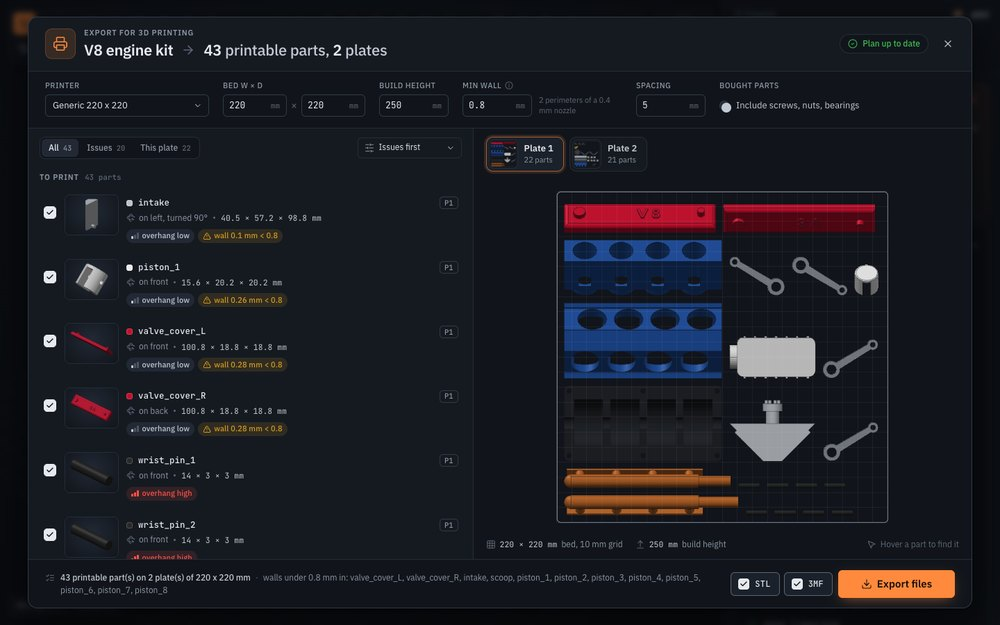

An AI CAD agent that checks its own work.
Describe a part. Claude writes a parametric build123d model, builds it, measures every hole, wall, collision and mass against what you asked for, and fixes what fails. Then you both edit the same model.
git clone https://github.com/SiddhuYen/eitri eitri && cd eitri && ./install.shOpen source under FSL-1.1-MIT. Runs on your machine with your own Anthropic key. macOS on Apple silicon is tested; Linux should work. No telemetry.
01The loop
Text-to-CAD tools generate plausible geometry and hope. eitri measures every build, and the agent has to fix what fails. It cannot delete the check: the checks are part of the build, and the prompt forbids weakening one.
-
1
Describe
A part in plain language. From the benchmark:
Make a 60 x 40 x 5 mm mounting plate with four M4 clearance holes 8 mm in from each edge and 5 mm rounded corners.
-
2
Build
Claude writes one short Python file: PARAMS, build(p), verify(). build123d on OpenCASCADE builds it as exact B-rep, not meshes. A parameter change rebuilds in about 0.5 s with no LLM call.
-
3
Measure
Every build comes back to the agent as a geometry report and a 4-view review image. A check that fails looks like this, from a real run on the phone stand task:
thinnest wall 0.28 mm, expected ≥ 2
-
4
Fix
The agent rebuilt until the wall was right. The wall scan samples just inside every planar face along its edges, deterministic, not luck, and knife edges under 30° are listed.
thinnest wall 3.2 mm, expected ≥ 2
02What every build measures
The inspection sheet the agent gets back, in the README's words.
| Envelope | bounding box, volume |
|---|---|
| Holes | every hole with diameter, depth and through-or-blind, so four M4 clearance holesis a number, not a claim |
| Walls | thinnest wall and knife edges. The wall scan now samples just inside every planar face along its edges (deterministic, not luck), knife edges under 30° are listed, and the prompt forbids weakening a check |
| Parts | interferences and clearances between parts. Every pair of parts whose bounding boxes come close is checked for overlap and clearance (no close pair is skipped, and a part buried wholly inside another counts as a collision) |
| Your request | the model's own verify() checks. verify() is where the agent encodes what you asked for; its results show up in every report and in the viewer |
| Review | a 4-view review image, rendered by a numpy software renderer in about 1 s, no browser |
| Mass | each part's mass properties (principal moments of inertia) when a material is set; the report and the parts list then show their mass |
| STEP | verified: export converts offset-curve parts to NURBS and re-imports the file to prove every part is still a solid with the right volume |
| Print meshes | every mesh is checked before it is written (closed, manifold, consistently wound, the solid's volume) and every file is read back and checked again; a part that fails is not written, and the dialog says which and where |
| Counterbores | a full socket-head counterbore in a 5 mm plate would cut clean through; cut_holes keeps 1.5 mm of floor and says so |
| Hole detection | cross-checked against OCCT's reference classifier: 1,490 holes and 51,474 near-surface points, no mismatches |
| Limits | the wall-thickness check is a dense sample (about 600 rays plus samples along every edge), not a proof |
03Same model, both hands
Everything you do in the Fusion-style editor becomes a direct edit in the model file, and the agent reads the same list. Stretch the plate by hand and tell Claude to continue: it reads your edits, adds the holes, then builds a hook on the circle you sketched and writes new checks for it.
Sketch, extrude, push/pull, fillet, holes from fastener tables, assemble, sheet metal, form bodies. Direct edits never call the LLM. $0.61 of API usage in the session shown.
04Numbers
Speed
Measured on an Apple-silicon Mac with the CAD engine already loaded.
| Change a parameter (no LLM) | about 0.5 s |
|---|---|
| Full build of a simple part: build, checks, review render | about 1 s |
| 3D view of a new build (shown before the checks finish) | 0.1 s small parts, 2.5 s for the 43-part V8 |
| 43-part V8 assembly, full build with interference and clearance checks | about 21 s |
| One request handled by Claude, end to end (22-task benchmark) | 89 s mean, 52 s median |
| Cost per request at API prices (same benchmark) | $0.24 mean ($0.07 to $1.10) |
Benchmark
22 tasks scored by checkers that read only the produced STEP file. Claude Opus 5.5 at effort high for both systems, 2026-10-11. The baseline is headless Claude Code with the text-to-cad plugin.
| baseline | eitri | |
|---|---|---|
| Tasks solved (all checks pass) | 20 / 22 | 22 / 22 |
| Mean check score | 0.99 | 1.00 |
| Time per task (CLI-measured) | 228 s | 89 s |
| Cost per task (list-price equivalent) | $0.44 | $0.24 |
| Blind pairwise judge (Opus, vision), 22 pairs | preferred 3 | preferred 9, 10 ties |
The baseline's two misses are walls it never measured (1.84 mm and 1.32 mm where 2 and 1.6 mm were asked) and then reported as fine. The gap is self-verification, not raw modelling: both use the same LLM.
The benchmark was built and run by eitri's authors, each task once, and the judge was also Claude: strong evidence, not independent proof. Every check's verdict is in bench/RESULTS.md.
05What comes out
- STEP
- Verified: the file is read back and every part checked to be a solid with the right volume.
- STL, 3MF, GLB, OBJ, IGES
- Meshes and surfaces for slicers, viewers and other CAD.
- Drawings
- Front, top, right and isometric views in third or first angle, hidden lines, dimensions, hole tables, section, detail, auxiliary and broken views, GD&T, a title block, as SVG, DXF or PDF.
- G-code and cut files
- 2.5-D CAM for a 3-axis mill with a time estimate, for GRBL or LinuxCNC. Laser, waterjet and plasma outlines as DXF or SVG with the kerf compensated; sheet-metal flat patterns with bend lines on their own layer.
- Print export
- Decompose, orient, plate, export. On the V8 demo: 43 printable parts on 2 plates of 220 x 220 mm, all 43 written and verified in about 3 s after a 3 s plan; 12 parts flagged with walls under 0.8 mm.

06Hosted
eitri runs on your machine today. A hosted version is coming. Leave an email and you will hear when it opens.